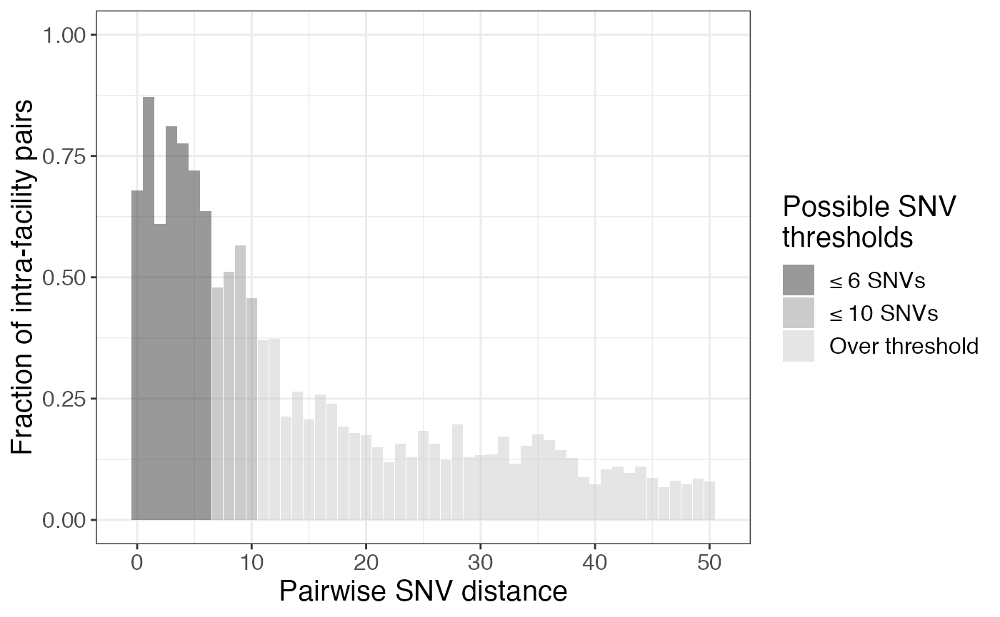
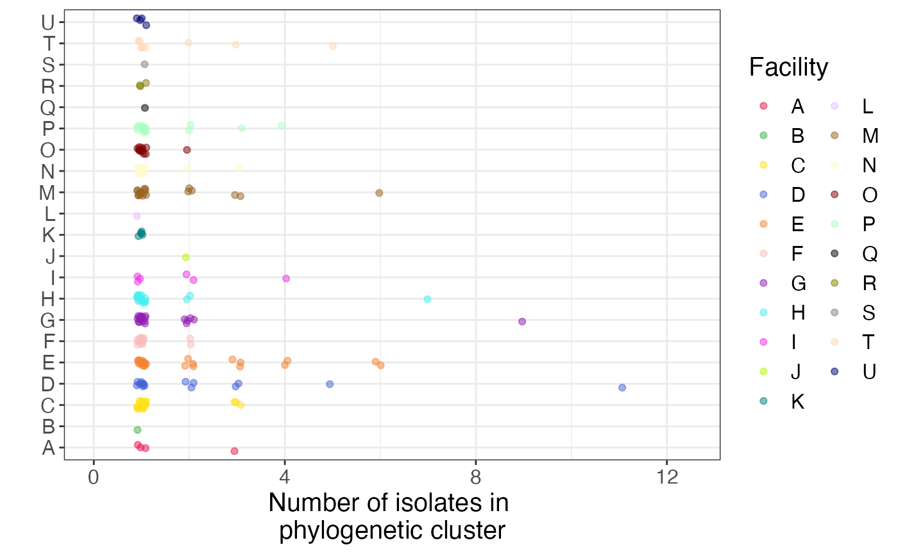
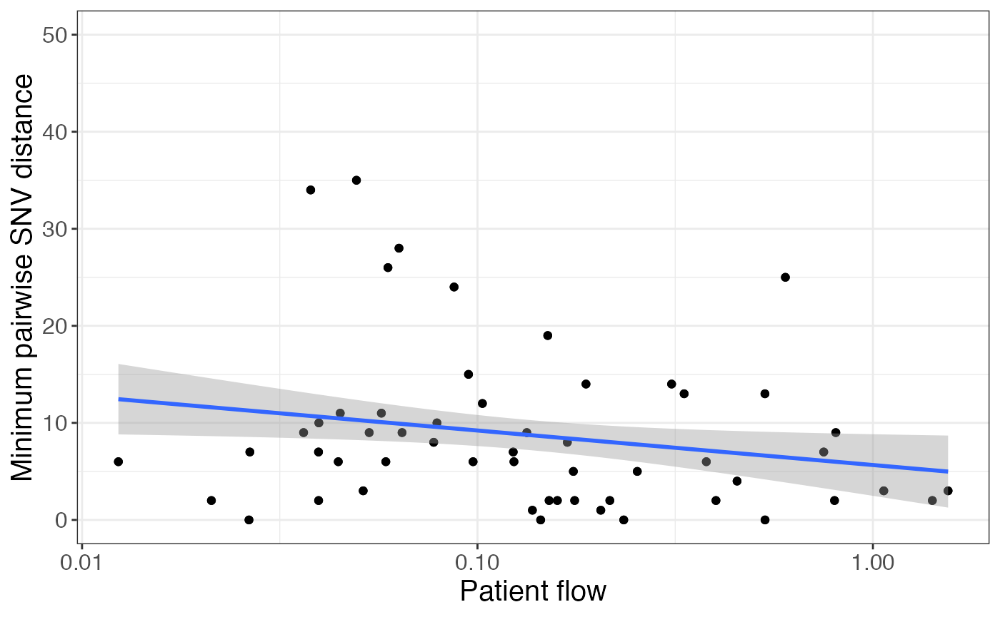

The goal of regentrans is to give users a framework and corresponding package for using genomics to study regional pathogen transmission.
To install the package from GitHub, use the command:
# install devtools if you don't already have it installed
# install.packages('devtools')
# install regentrans
devtools::install_github('Snitkin-Lab-Umich/regentrans')
# load regentrans
library(regentrans)Other packages you’ll need to load to run this tutorial include:
library(ape)
library(tidyverse)
library(devtools)
library(ggtree)
library(pheatmap)
library(phytools)
library(gridExtra)
library(cowplot)
# set theme for plots
theme_set(theme_bw() + theme(strip.background = element_rect(fill="white",linetype='blank'), text=element_text(size=15)))A note on population genomics
It is outside the scope of this framework and corresponding package to discuss population genomic analysis more generally. We direct you to this review for more information on what to consider when developing and executing a population genomics study: Best Practice for Population Genetic Analysis.
Data prep
In general, the data pre-processing pipeline is described in this figure:
regentrans pre-processing workflow.
More specifically, to use regentrans, you will need your data in a certain format. It is important to ensure that you have all relevant information for all of the isolates of interest for your analysis. Each isolate should be represented in the metadata as well as in the fasta file of variants and phylogenetic tree. regentrans functions will subset the data for you to include only ones present in all of the required function inputs.
First, we provide examples of how you can read in your data. Then, we describe the built-in data that we use here in the vignette and that you can use to test out the package.
How to read in your own data
Note that this code will not run successfully unless you change the paths to be correct.
Metadata
The only required metadata is location, but additional information can also be incorporated into the analysis including patient, sequence type, and collection date.
# this is if your metadata is in a csv file
metadata <- readr::read_csv("/path/to/metadata.csv")Genomic data
Either a variant alignment or a phylogenetic tree are required for most functions in regentrans.
Variant alignment
The variant alignment can be read in to R using the following command:
# this is if your alignment is in a fasta file
aln <- ape::read.dna("/path/to/aln.fasta",
format = "fasta")Pairwise SNV distance matrix
Some regentrans functions require a genomic distance matrix as input. A pairwise single nucleotide variant (SNV) distance matrix can be created using the fasta file:
dists <- ape::dist.dna(x = aln, # DNAbin object as read in above
as.matrix = TRUE, # return as matrix
model = "N", # count pairwise distances
pairwise.deletion = TRUE # delete sites with missing data in a pairwise way
)Phylogenetic tree
We recommend using IQ-TREE to generate a maximum likelihood phylogenetic tree for your dataset. However, there are also ways to make simple phylogenies in R using a variant alignment.
A phylogenetic tree in Newick format can be read into R using the following command:
# this is if the tree is in Newick format
tr <- ape::read.tree("path/to/data.treefile")Patient transfer network
A patient transfer network representing facilities that isolates came from represented by a data.frame with three columns: source_facil, dest_facil and n_transfers.
# this is if your patient transfer network is in a csv file
pt_trans_df <- readr::read_csv("/path/to/pt_trans_net.csv")
Input data format (& using the built-in regentrans data)
The example data from the package uses carbapenem-resistant Klebsiella pneumoniae (CRKP) sequence type (ST) 258 whole-genome sequencing data from Han et al. 2019. This data is a comprehensive collection of clinical CRKP isolates collected from long-term acute care hospitals across the U.S. over the course of a year. The data was processed as in Lapp et al. 2021.
If you want to use your own data as input to the functions in the vignette, format your data according to the instructions above and set the following objects equal to your data. If you will not be using any of the optional data, make sure to assign those objects to NULL.
Metadata
The regentrans metadata is in the metadata object. We have information on the sample ID, patient ID, facility, and collection date:
head(metadata)## isolate_id patient_id facility collection_date
## 1 PCMP_H1 p1 A 2014
## 2 PCMP_H2 p2 B 2014
## 3 PCMP_H3 p3 C 2014
## 4 PCMP_H4 p4 D 2014
## 5 PCMP_H5 p5 E 2014
## 6 PCMP_H223 p5 F 2015Variant alignment
The variant alignment is a DNAbin object that we can use to calculate the pairwise SNV distances between our samples:
class(aln)## [1] "DNAbin"
aln## 413 DNA sequences in binary format stored in a matrix.
##
## All sequences of same length: 83976
##
## Labels:
## PCMP_H100
## PCMP_H101
## PCMP_H103
## PCMP_H104
## PCMP_H105
## PCMP_H106
## ...
##
## More than 10 million bases: not printing base composition.
## (Total: 34.68 Mb)Pairwise SNV distance matrix
We have provided the pairwise SNV distance matrix as part of the package as it is a bit timely to compute, but it can also easily be generated using the alignment we provideusing the command described above. Here is a subset of the distance matrix:
dists[1:5,1:5]## PCMP_H100 PCMP_H101 PCMP_H103 PCMP_H104 PCMP_H105
## PCMP_H100 0 148 194 69 171
## PCMP_H101 148 0 128 160 47
## PCMP_H103 194 128 0 208 156
## PCMP_H104 69 160 208 0 184
## PCMP_H105 171 47 156 184 0The row and column names are the names of the samples and the values in the matrix are the pairwise SNV distances between each isolate pair. Note that this is a symmetric matrix.
Phylogenetic tree
We also provide a maximum likelihood phylogenetic tree that was generated using IQ-TREE:
tr##
## Phylogenetic tree with 413 tips and 412 internal nodes.
##
## Tip labels:
## PCMP_H100, PCMP_H98, PCMP_H123, PCMP_H141, PCMP_H376, PCMP_H384, ...
## Node labels:
## 100, 99, 99, 100, 83, 100, ...
##
## Rooted; includes branch lengths.Patient transfer network
While we are not able to provide the true patient transfer network related to the example dataset, we have generated a simulated patient transfer network that we have included here:
head(pt_trans_df)## source_facil dest_facil n_transfers
## 1 H D 17
## 2 G D 14
## 3 C D 474
## 4 T D 182
## 5 F D 60
## 6 I D 63This data frame contains three columns:
-
source_facil: The source facility. -
dest_facil: The destination facility. -
n_transfers: The number of patient transfers between source and destination facility over some length of time (e.g. 1 day, 1 month, or 1 year).
Subsetting to one isolate per patient per facility
As we have multiple samples from some patients, we first subset to the first isolate from each patient per facility to avoid overestimating transmission. We can do this in R as follows:
# subset metadata to include the first isolate from each patient per facility
metadata <- metadata %>% arrange(collection_date) %>% filter(!duplicated(patient_id, facility))
# isolate subset
isolate_subset <- metadata$isolate_id
# subset alignment
aln <- aln[isolate_subset,]
# subset tree
tr <- keep.tip(tr, isolate_subset)
# subset distance matrix
dists <- dists[isolate_subset, isolate_subset]Extracting location as a vector
For many of the regentrans functions, the required location input is a named vector where the elements are locations (e.g. facility) and the names are the sample ID. To get the location information from the built-in metadata, we can run this command:
# named vector of locations
locs <- metadata %>% select(isolate_id, facility) %>% deframe()
head(locs)## PCMP_H1 PCMP_H2 PCMP_H3 PCMP_H4 PCMP_H5 PCMP_H7
## "A" "B" "C" "D" "E" "G"The sample names are PCMP_H1, PCMP_H2, etc. And the facilities are A, B, etc.
Overview of questions
In the following vignette, we go over the following questions and how regentrans can be used to investigate them:
- How do you choose pairwise SNV distance thresholds?
- Is transmission occurring within and/or between facilities?
- What facilities is transmission occurring within/between?
- Have transmission dynamics changed over time?
- Is transmission occurring along paths of higher patient/person flow?
- Are there any observable geographic trends in prevalence/transmission?
0. How do you choose pairwise SNV distance thresholds?
While some of the methods we present here are threshold-free, some require you to choose a pairwise SNV distance threshold. We highly recommend doing a sensitivity analysis with several thresholds to see how robust the results are to different thresholds.
To help you choose reasonable pairwise SNV distance thresholds for a sensitivity analysis, we describe two methods below.
Method 1: Use reference genome length and mutation rate
One way to choose a pairwise SNV distance threshold is to use the estimated mutation rate of the organism you are studying. Here is an example for our dataset (K. pneumoniae ST258):
ref_genome_length <- 5394056
mutation_rate <- 1.03e-6 # estimated from a K. pneumoniae ST258 time tree
floor(2*ref_genome_length*mutation_rate)## [1] 11This value means that, over the course of a year, each ST258 strain is expected to gain about 5.5 mutations. This gives us a parwise SNV distance threshold of \(5.5*2 = 11\), as our isolates were collected over a year-long period.
Method 2: Visualizing intra-facility pair fraction distribution with help from get_frac_intra()
Sometimes it is difficult to calculate a mutation rate for a given organism, or the mutation rate might be variable even within a clonal lineage. Therefore, we also recommend using the data to identify potential pairwise SNV distance thresholds. Here, we use the assumption that intra-facility transmission is more common than inter-facility transmission to identify reasonable thresholds by looking for drops in the fraction of isolate pairs that are intra-facility pairs compared to inter-facility pairs for various SNV distances. Note that not all datasets will drop off, so this method may not work for some datasets.
We can use get_pair_types() to get the pair types for each isolate pair (intra- or inter-facility) and get_frac_intra() to calculate the fraction of intra-facility pairs for different SNV distances:
# get pair types for pairwise SNV distances (intra vs. inter)
pair_types <- get_pair_types(dists = dists, locs = locs)
# get fraction of intra-facility pairs for each SNV distance
frac_intra <- get_frac_intra(pair_types = pair_types)The output of get_pair_types() includes information about each isolate pair including the pairwise distance, location of each isolate in the pair, and the type of pair (intra- or inter-facility):
head(pair_types)## isolate1 isolate2 pairwise_dist loc1 loc2 pair_type
## 1 PCMP_H2 PCMP_H1 42 B A Inter-facility pair
## 2 PCMP_H3 PCMP_H1 91 C A Inter-facility pair
## 3 PCMP_H4 PCMP_H1 65 D A Inter-facility pair
## 4 PCMP_H5 PCMP_H1 148 E A Inter-facility pair
## 5 PCMP_H7 PCMP_H1 87 G A Inter-facility pair
## 6 PCMP_H8 PCMP_H1 201 H A Inter-facility pairEach row of the get_frac_intra() output is a different pairwise distance and the columns include the number and fraction of intra- and inter-facility pairs for each pairwise distance:
head(frac_intra)## # A tibble: 6 x 5
## # Groups: pairwise_dist [6]
## pairwise_dist n_intra n_inter frac_intra frac_inter
## <dbl> <dbl> <dbl> <dbl> <dbl>
## 1 0 18 6 0.75 0.25
## 2 1 23 2 0.92 0.0800
## 3 2 18 12 0.6 0.4
## 4 3 23 4 0.852 0.148
## 5 4 32 7 0.821 0.179
## 6 5 34 10 0.773 0.227Below we plot the fraction of intra-facility pairs for pairwise SNV distance up to 50. We have highlighted two drops in fraction of intra-facility pairs, which may be indicative of potential reasonable pairwise SNV distance thresholds. On of these (≤ 10) matches closely with Method 1. Based on this data, we use thresholds of 10 and 6 for our sensitivity analysis.
# plot fraction of intra-facility pairs for each SNV distance
frac_intra %>%
mutate(under = ifelse(pairwise_dist <= 10, '≤ 10 SNVs','Over threshold'), under = ifelse(pairwise_dist <= 6, '≤ 6 SNVs',under),
under = factor(under, levels = c('≤ 6 SNVs', '≤ 10 SNVs','Over threshold'))) %>%
ggplot(aes(x = pairwise_dist, y = frac_intra, fill = under)) +
geom_bar(stat = "identity", alpha = 0.5) +
scale_fill_grey() +
labs(x = "Pairwise SNV distance", y = "Fraction of intra-facility pairs", fill = 'Possible SNV\nthresholds') +
ylim(0, 1) + xlim(-1,51) ## Warning: Removed 235 rows containing missing values (position_stack).## Warning: Removed 1 rows containing missing values (geom_bar).Our dataset is extremely comprehensive and the isolates are all very closely related. However, if this is not the case in your dataset, you may want to bin the x axis into groups of pairwise SNV distances:
frac_intra_bin <- frac_intra %>%
filter(pairwise_dist <= 50) %>%
mutate(bin = cut(pairwise_dist, seq(0, max(pairwise_dist) + 5, 5), right = FALSE)) %>%
group_by(bin) %>%
summarise(n_intra = sum(n_intra), n_inter = sum(n_inter)) %>%
mutate(frac_intra = ifelse(n_intra != 0,
n_intra/(n_intra+n_inter), 0))
frac_intra_bin %>%
ggplot(aes(x = bin, y = frac_intra)) +
geom_bar(stat = "identity", alpha = 0.5) +
scale_fill_grey() +
labs(x = "Pairwise SNV distance", y = "Fraction of intra-facility pairs") +
ylim(0, 1) 
In this case, we might have chosen a pairwise SNV distance of 10, or tried plotting the data with other bins to get a more nuanced understanding of how the fraction changes, if we have enough data to do so.
1. Is transmission occurring within and/or between locations?
To explore this question we can leverage our whole-genome sequencing data in the form of the phylogenetic tree using the get_clusters() function and the SNV distance matrix using the get_pair_types().
Threshold-free phylogenetic approach
Visualize the phylogenetic tree annotated by location
It is useful to first visualize the extent of clustering on the phylogeny. To do this, we can plot the tree using ggtree:
# pick prettier colors than the default
cols <- c('#e6194b', '#3cb44b', '#ffe119', '#4363d8', '#f58231', '#911eb4', '#46f0f0', '#f032e6', '#bcf60c', '#fabebe', '#008080', '#e6beff', '#9a6324', '#fffac8', '#800000', '#aaffc3', '#808000', '#ffd8b1', '#000075', '#808080', '#000000')
names(cols) <- unique(locs)
# create vector for plotting location as colors
locs_tip <- c(locs[tr$tip.label], rep(NA, Nnode(tr)))
# plot tree
ggtree(tr) + geom_tippoint(aes(col = locs_tip)) +
scale_color_manual(values = cols) +
labs(col = 'Facility') 
As we can see here, isolates from some facilities tend to cluster on the phylogeny (e.g. facilities D and E), which suggests that intra-facility transmission may be occurrring.
Quantify clusters using get_clusters()
It is also useful to quantify the size of phylogenetic clusters from the same facility. Larger clusters indicate more within-facility transmission while smaller clusters or singletons indicate more importation. When working with the get_clusters() function, you may perform analyses with various cluster pureness levels. The default pureness value is 1. Lower values will allow clusters to be identified that have some “contamination” with other facilities.
# get clusters (note this takes some time to run, but not too long for the test dataset!)
clusters <- get_clusters(tr,locs, pureness = 1)The output of get_clusters() is a list including a data frame of information about the pure subtrees identifed and a list of the subtrees themselves:
# dissect output
pure_subtree_info <- clusters$pure_subtree_info
subtrees <- clusters$subtrees
pure_subtree_info## # A tibble: 224 x 4
## loc subtr_size index isolate_id
## <chr> <dbl> <int> <chr>
## 1 D 1 NA PCMP_H100
## 2 N 1 NA PCMP_H98
## 3 D 1 NA PCMP_H141
## 4 D 3 10 <NA>
## 5 D 1 NA PCMP_H142
## 6 E 6 17 <NA>
## 7 H 1 NA PCMP_H391
## 8 D 1 NA PCMP_H93
## 9 H 1 NA PCMP_H138
## 10 T 1 NA PCMP_H281
## # … with 214 more rowsThe data frame includes the location, the size of the subtree (i.e. cluster), the index of the subtree in the list of subtrees, and the isolate ID if it is a singleton.
We can plot the size of these clusters to visualize the output:
ggplot(data = pure_subtree_info, aes(x = loc, y = subtr_size, color = loc)) +
geom_jitter(position = position_jitter(width = 0.2, height = 0.1), alpha = 0.5) +
scale_color_manual(values = cols) +
labs(y = "Number of isolates in \nphylogenetic cluster", x = "", color = 'Facility') +
ylim(c(0,12.5)) +
coord_flip()
Here, we confirm what we saw visually - that some facilities have large pure clusters of isolates, suggesting intra-facility transmission.
Assign each isolate to a cluster
Sometimes it’s useful to know which cluster each isolate belongs to. To do this, you can use the following code:
# get ids of isolates in each cluster
isolates_clusters <- sapply(1:nrow(pure_subtree_info), function(x){
i <- pure_subtree_info$index[x]
name <- pure_subtree_info$isolate_id[x]
if(!is.na(i)){
name <- subtrees[[i]]$tip.label
}
name
})
# get unique cluster names
facil_clusters <- sapply(unique(locs), function(x){
clusts <- isolates_clusters[pure_subtree_info$loc == x]
names(clusts) <- paste0(x, 1:length(clusts))
cluster_nums <- unlist(sapply(names(clusts), function(x){
rep(x, length(clusts[[x]]))
}))
names(cluster_nums) <- unlist(clusts)
cluster_nums
}) %>% unname() %>% unlist()
head(facil_clusters)## PCMP_H144 PCMP_H91 PCMP_H1 PCMP_H326 PCMP_H49 PCMP_H156
## "A1" "A1" "A1" "A2" "A3" "A4"facil_clusters is a named list where the names are the isolate id and the elements are the cluster that it belongs to, named by facility followed by cluster number for that facility.
With this many groups, it’s kind of crazy to visualize on the phylogeny, but it could be useful if you have fewer:
Pairwise SNV distance approach
Even if isolates from the same facility cluster on the phylogeny, they may still be distantly related to each other. To see how closely related isolate pairs are, we can leverage our whole-genome sequencing data in the form of the SNV distance matrix and the get_pair_types() function. We already identified intra- and inter-facility pairs above using get_pair_types(), so we won’t re-compute them here.
Below we plot the intra- and inter-facility pairwise SNV distances as a histogram. The grey line is a pairwise SNV distance of 11. We can see that there are closely related intra- and inter-facility isolate pairs, with an enrichment in intra-facility pairs.
snv_hist <- pair_types %>%
ggplot(aes(x = pairwise_dist, fill = pair_type)) +
geom_histogram(position = 'identity', alpha = 0.4, bins = 30) +
labs(x = "Pairwise SNV distance", y = "Count", fill = "") +
geom_vline(xintercept = 11, col = 'darkgrey', size = 1) +
theme(legend.justification = "top",
axis.line = element_line(colour = "black"),
panel.border = element_blank())
snv_histWe can also take a closer look at the closely related pairs by zooming into the left side of the histogram, further highlighting the enrichment in intra-facility pairs at small pairwise SNV distances:
## Warning: Removed 49782 rows containing non-finite values (stat_bin).## Warning: Removed 4 rows containing missing values (geom_bar).Is transmission occurring between different sample sources?
If your dataset includes environmental samples and, you could also explore whether transmission is occurring between different sample sources by considering each environmental source a location. You could then determine what fraction of your isolate pairs are patient-patient pairs vs. patient-environment pairs vs. environment-environment pairs with the code below.
Note that this is a toy example as this sample data only includes patient samples.
If your samples are labeled differently (i.e. patient samples are labeled with PT_… and environmental samples are labeled with EN_…) you may want to use a function like grepl to differentiate between sample types.
Note that this is one of many ways in which the functions provided in regentrans can be used to ask questions about transmission that we do not directly discuss here. Other examples include looking at transmission between zip codes or wards/rooms in a facility.
# create toy data
# each patient and each environment is a different location
# get patients
pts <- unique(locs)[1:round(length(unique(locs))/2)]
# get environments
envs <- unique(locs)[(round(length(unique(locs))/2)+1):length(unique(locs))]
pair_types %>% mutate(src1 = ifelse(loc1 %in% pts, 'pt','env'),
src2 = ifelse(loc2 %in% pts, 'pt','env')) %>%
ggplot(aes(x = pairwise_dist, fill = paste(src1, src2))) +
geom_histogram(position = 'identity', alpha = 0.4, bins = 30) +
labs(x = "Pairwise SNV distance", y = "Count", fill = "") +
geom_vline(xintercept = 11, col = 'darkgrey', size = 1)2. What locations is transmission occurring within/between?
We can use threshold-free or SNV threshold-based approaches to investigate what locations transmission is occurring within or between.
Gene flow (Fsp)
To determine the extent of gene flow between two facilities, we can calculate Fsp (Donker et al., 2017) as a measure of similarity between populations at different facilities. A value of 0 indicates that the populations are identical, while value of 1 indicates that the populations are completely different. The fsp function outputs a symmetric matrix of fsp values for each facility pair. The row and column names are the facilities and the values are fsp:
fsp[1:4,1:4]## A C D E
## A 0.0000000 0.7679634 0.7469595 0.8197587
## C 0.7679634 0.0000000 0.3525517 0.3523582
## D 0.7469595 0.3525517 0.0000000 0.2267869
## E 0.8197587 0.3523582 0.2267869 0.0000000We can plot the fsp values as a heatmap to visualze the extent of similarity between strains from different facility pairs:
# this takes a while to run, so we've pre-computed it and included it in the package
# fsp <- get_facility_fsp(aln, locs)
pheatmap(fsp)Here we can see that some facilities have more similar CRKP populations than others, suggesting that there is more transmission between those facilities.
One way to determine whether fsp values are significant is to use permutation (Donker et al., 2017).
SNV distances
We can also look at the number of closely related pairs of isolates at different facility pairs to get a sense of the extent of potential recent transmission and identify facilities and facility pairs with more putative spread. For this, we must choose a SNV threshold. Therefore, we recommend performing a sensitivity analysis by choosing several different SNV thresholds and seeing how robust the results are to these changes.
To do this, we can summarize the pairwise SNV distance information using the summarize_pairs() function:
# get summary of pairwise SNV distance data
snv_summary <- summarize_pairs(pair_types,summary_fns = c('min'), threshs = c(6, 10))
snv_summary## # A tibble: 227 x 5
## # Groups: loc1, loc2 [227]
## loc1 loc2 dist_min leq_6 leq_10
## <chr> <chr> <dbl> <int> <int>
## 1 A A 1 3 3
## 2 A B 19 0 0
## 3 A C 63 0 0
## 4 A D 36 0 0
## 5 A E 65 0 0
## 6 A F 70 0 0
## 7 A G 69 0 0
## 8 A H 71 0 0
## 9 A I 73 0 0
## 10 A J 42 0 0
## # … with 217 more rowsThe output is a summary of the isolate pairs for different facility pairs. Here, we also filtered out intra-facility pairs, as we are most interested in inter-facility transmission as compared to patient transfer. The function allows you to input a vector of whatever summary functions you’d like (default is minimum pairwise SNV distance), as well as pairwise SNV distance thresholds to compute the number of closely related pairs for each facility pair under that threshold.
Now, we can plot that information to identify facilities with closely related intra- and inter-facility pairs:
# get facility summary
facil_summary <- snv_summary %>%
mutate(pair_type = factor(ifelse(loc1 == loc2, 'Intra-facility pair', 'Inter-facility pair'),
levels = c('Intra-facility pair', 'Inter-facility pair'))) %>%
group_by(loc1, pair_type, leq_6, leq_10) %>% summarize() %>%
pivot_longer(cols = c(leq_6, leq_10)) %>% rename(thresh = name, n_pairs = value) %>%
mutate(thresh = paste(gsub('leq_','≤ ', thresh), 'SNVs'))
# get locations to keep (at least 1 closely related pair)
keep_locs <- facil_summary %>% group_by(loc1) %>% summarize(sum_all = sum(n_pairs)) %>% filter(sum_all != 0) %>% select(loc1) %>% deframe()
# plot
facil_summary %>% filter(loc1 %in% keep_locs) %>%
tidyr::complete(loc1, pair_type, thresh) %>%
ggplot(aes(x = reorder(loc1, -n_pairs, sum), y = n_pairs, fill = pair_type)) +
geom_col(position = 'dodge') +
scale_fill_manual(values=c("cadetblue", "salmon")) +
labs(y = "Number of closely related \nisolate pairs", x = "Facility", fill = '', color = '') +
facet_grid(factor(thresh, levels = c('≤ 6 SNVs','≤ 10 SNVs'))~.)## Warning: Removed 2 rows containing missing values (geom_col).Here we see that there is a large number of closely related isolates at certain facilities (e.g. D) and very few at others. We also see that, while most facilities have more closely related intra-facility pairs than inter-facility pairs, this observation does not hold for facilities C and F, which has more closely related intra-facility pairs than inter-facility pairs.
Furthermore, the results vary somewhat between the two different SNV thresholds, but are relatively consistent.
3. Have transmission dynamics changed over time or across species?
To investigate whether transmission dynamics have changed over time or differ across groups (such as sequence type or species) we can “facet” on those variables. Here is an example of faceting on date:
# get dates
dates <- metadata %>% select(isolate_id, collection_date) %>% deframe()
time1 <- pair_types %>%
mutate(date1 = dates[isolate1], date2 = dates[isolate2]) %>%
filter(date1 == date2) %>%
ggplot(aes(x = pairwise_dist, fill = pair_type)) +
geom_histogram(position = 'identity', alpha = 0.4, bins = 30) +
labs(x = "Pairwise SNV distance", y = "Count", fill = "") +
facet_grid(~date1) +
theme(legend.justification = "top",
axis.line = element_line(colour = "black"),
panel.border = element_blank())
time2 <- pair_types %>%
mutate(date1 = dates[isolate1], date2 = dates[isolate2]) %>%
filter(date1 == date2) %>%
ggplot(aes(x = pairwise_dist, fill = pair_type)) +
geom_histogram(position = position_fill(), alpha = 0.4, bins = 30) +
# xlim(0,20) +
labs(x = "Pairwise SNV distance", y = "Fraction", fill = "") +
facet_grid(~date1) +
theme(legend.justification = "top",
axis.line = element_line(colour = "black"),
panel.border = element_blank())
plot_grid(time1, time2, nrow = 2, labels = 'AUTO')## Warning: Removed 8 rows containing missing values (geom_bar).The first row of plots show histograms of the raw counts while the second row of plots shows the fraction of isolates at that pairwise SNV distance. We don’t observe many differences over time, except that there are more isolate pairs in 2015 compared to 2014. This is not unexpected given that the dataset we are using is from an endemic setting. If the dataset is from an outbreak setting, you may expect changes in closely related intra- and inter-facility pairs over time. For example, an increase in intra-facility transmission followed by an increase in inter-facility transmission as it disseminates across the healthcare network.
4. Is transmission occurring along paths of higher patient flow?
To explore this question, we can leverage our whole-genome sequencing data in the form of the SNV distance matrix and/or Fsp matrix along with the patient transfer network using the get_patient_flow(), summarize_pairs(), and merge_inter_summaries() functions.
Note: If you do not have a patient transfer network, you may be able to use geographic distances between facilities as a proxy for patient transfer because they are often correlated.
Remember that choosing pairwise SNV distance threshold(s) based on your dataset is very important, avoid using the default values for your own dataset.
We already summarized the genomic data above using summarize_pairs().
We can also get the direct and indirect patient flow between facilities (see Han et al. 2019 for details on how indirect flow is calculated.) using get_patinet_flow(). The input to this is a data frame with three columns:
-
source_facil: the source facility -
dest_facil: the destination facility -
n_transfers: the number of transfers from source facility to destination facility over a certain amount of time (e.g. 1 month, 1 year, etc.)
Here is a toy example that we generated for the vignette:
head(pt_trans_df)## source_facil dest_facil n_transfers
## 1 H D 17
## 2 G D 14
## 3 C D 474
## 4 T D 182
## 5 F D 60
## 6 I D 63Here is the output of get_patinet_flow():
pt_trans <- get_patient_flow(pt_trans_df = pt_trans_df)
head(pt_trans)## loc1 loc2 n_transfers_f12 pt_trans_metric_f12 n_transfers_f21
## 1 D H 260 0.04512957 17
## 2 D G 5 0.03212340 14
## 3 C D 474 0.06218840 2660
## 4 D T 8 0.02663025 182
## 5 D F 46 0.06683914 60
## 6 D I 12 0.16451422 63
## pt_trans_metric_f21 sum_transfers sum_pt_trans_metric
## 1 0.019319187 277 0.06444875
## 2 0.004199755 19 0.03632315
## 3 0.391118953 3134 0.45330736
## 4 0.032739701 190 0.05936995
## 5 0.028057366 106 0.09489650
## 6 0.023562553 75 0.18807677The get_patient_flow() function outputs several columns:
- The facility pair (
loc1andloc2) - The number of transfers from facility 1 to 2 (
n_transfers_f12), and facility 2 to 1 (n_transfers_f21) - The indirect flow metrics from facility 1 to 2 (
pt_trans_metric_f12), and facility 2 to 1 (pt_trans_metric_f21) - Undirected transfer and flow metrics that are the sum of the two direct metrics (
sum_transfersandsum_pt_trans_metric). This is useful for comparing to the undirected pairwise SNV distance summary and Fsp.
Next, we can merge the patient flow, pairwise SNV distance, and fsp summaries (note that there are a lot of NA values here because we do not have patient flow information for all facilities):
# have to convert fsp matrix to long form first
fsp_long <- make_long_form(fsp)
# only keep inter-facility info in snv_summary
inter_snv_summary <- snv_summary %>% filter(loc1 != loc2)
pair_info <- merge_inter_summaries(pt_trans, inter_snv_summary, fsp_long)
pair_info## # A tibble: 265 x 12
## # Groups: loc1, loc2 [210]
## loc1 loc2 dist_min leq_6 leq_10 fsp n_transfers_f12 pt_trans_metric_f12
## <chr> <chr> <dbl> <int> <int> <dbl> <dbl> <dbl>
## 1 A B 19 0 0 NA NA NA
## 2 A C 63 0 0 0.768 NA NA
## 3 A D 36 0 0 0.747 NA NA
## 4 A E 65 0 0 0.820 NA NA
## 5 A F 70 0 0 0.739 NA NA
## 6 A G 69 0 0 0.732 NA NA
## 7 A H 71 0 0 0.844 NA NA
## 8 A I 73 0 0 0.868 NA NA
## 9 A J 42 0 0 0.974 NA NA
## 10 A K 102 0 0 0.948 NA NA
## # … with 255 more rows, and 4 more variables: n_transfers_f21 <dbl>,
## # pt_trans_metric_f21 <dbl>, sum_transfers <dbl>, sum_pt_trans_metric <dbl>Now we’re ready to plot patient flow vs. various genomic metrics of similarity between facilities:
We see a negative correlation between patient flow and Fsp, suggesting that facilities connected by more patient transfer are more likely to have similar populations, indicative of more transmission (Remember that fsp values closer to 0 indicate more closely related populations):
pair_info %>%
ggplot(aes(x=sum_pt_trans_metric,y=fsp)) +
geom_point() + geom_smooth(method='lm') + scale_x_log10() +
labs(x = 'Patient flow', y = 'Fsp') ## `geom_smooth()` using formula 'y ~ x'## Warning: Removed 155 rows containing non-finite values (stat_smooth).## Warning: Removed 155 rows containing missing values (geom_point).These observations are corroborated by the positive relationship between patient transfer and number of closely related isolate pairs for a given facility pair:
pair_info %>%
ggplot(aes(x=sum_pt_trans_metric,y=leq_10)) +
geom_point() + geom_smooth(method='lm') + scale_x_log10() +
labs(x = 'Patient flow', y = '# closely related\npairs (≤ 10 SNVs)') ## `geom_smooth()` using formula 'y ~ x'## Warning: Removed 155 rows containing non-finite values (stat_smooth).## Warning: Removed 155 rows containing missing values (geom_point).Are there any observable geographic trends in prevalence/transmission?
To evaluate whether there are any observable geographic trends in prevalence or transmission, we will need geographic information (latitude and longitude) for each facility. Here we’ve de-identified the facility geographies as an example. Note that we don’t have geographic information for all facility pairs.
facil_coord## # A tibble: 11 x 3
## facil long lat
## <chr> <dbl> <dbl>
## 1 C -930605. -740730.
## 2 D -930605. -740730.
## 3 E -930605. -740730.
## 4 F -930605. -740730.
## 5 G -930605. -740730.
## 6 H -930605. -740730.
## 7 I -930605. -740730.
## 8 M -930605. -740730.
## 9 O -930605. -740729.
## 10 P -930605. -740730.
## 11 T -930605. -740730.This data frame contains the facility ID, longitude, latitude.
We can also add information about the number of isolates from each facility to include as point size on our map:
# get counts for each location
loc_n <- locs %>% table() %>% as.data.frame() %>% `colnames<-`(c("facil", "n_isolates"))
# merge longitude/latitude with locations
facil_geo <- facil_coord %>% left_join(loc_n, by = 'facil')
facil_geo## # A tibble: 11 x 4
## facil long lat n_isolates
## <chr> <dbl> <dbl> <int>
## 1 C -930605. -740730. 30
## 2 D -930605. -740730. 38
## 3 E -930605. -740730. 51
## 4 F -930605. -740730. 19
## 5 G -930605. -740730. 37
## 6 H -930605. -740730. 29
## 7 I -930605. -740730. 11
## 8 M -930605. -740730. 33
## 9 O -930605. -740729. 13
## 10 P -930605. -740730. 24
## 11 T -930605. -740730. 15We can use this to plot the facilities on a map and connect them by closely related pairs (here we use the under 7 threshold for visualization purposes). Point size represents number of isolates collected from a facility and transparency represents the number of closely related isolate pairs.
# merge facil_info and facil_geo
snv_geo <- pair_info %>%
left_join(facil_geo, by = c("loc1" = "facil")) %>%
rename(facil_1_lat = lat, facil_1_long = long, facil_1_n = n_isolates) %>%
left_join(facil_geo, by = c("loc2" = "facil")) %>%
rename(facil_2_lat = lat, facil_2_long = long, facil_2_n = n_isolates) %>%
filter(!is.na(facil_1_lat) & !is.na(facil_2_lat))
# filter to not plot zeros
snv_geo_thresh <- snv_geo %>% filter(leq_6 > 0)
facil_geo %>%
ggplot(aes(x=long, y=lat)) +
geom_curve(aes(x = facil_1_long, y = facil_1_lat, xend = facil_2_long, yend = facil_2_lat,
alpha = leq_6),
data = snv_geo_thresh, curvature = 0.33) +
geom_point(aes(size=n_isolates), alpha=1, color = "lightblue") +
theme_map() +
labs(size = 'Number of samples', alpha = 'Number of closely related\npairs (≤ 6 SNVs)')
We can also look at the relationship between physical distance between facilities and number of closely related pairs. First, we have to get the physical distance between facilities:
snv_geo <- snv_geo %>%
mutate(geo_dist = sqrt((facil_1_long-facil_2_long)^2+(facil_1_lat-facil_2_lat)^2))Then we can plot the relationship between physical distance and summary metrics. Here is an example using the number of pairs under a pairwise SNV distance of 11 between facility pairs:
snv_geo %>%
ggplot(aes(x = geo_dist, y = leq_10)) + geom_point() + geom_smooth(method = 'lm') +
labs(x = 'Physical distance between facilities', y = '# closely related pairs\n(≤ 10 SNVs)')## `geom_smooth()` using formula 'y ~ x'
A note on additional metadata
Sometimes it’s useful to make plots faceted or subsetted based on various information from metadata such as collection date, sequence type, etc. To do this, you can merge the pair_types object with the metadata object as follows (modifying the code as fit for your dataset):
# merge pair_types and metadata, and find time difference
snv_and_metadat <- left_join(pair_types, metadata, by = c('isolate1' = 'isolate_id')) %>%
rename(patient_id_1 = patient_id, collection_date_1 = collection_date) %>%
left_join(metadata, by = c('isolate2' = 'isolate_id'))
head(snv_and_metadat)## isolate1 isolate2 pairwise_dist loc1 loc2 pair_type patient_id_1
## 1 PCMP_H2 PCMP_H1 42 B A Inter-facility pair p2
## 2 PCMP_H3 PCMP_H1 91 C A Inter-facility pair p3
## 3 PCMP_H4 PCMP_H1 65 D A Inter-facility pair p4
## 4 PCMP_H5 PCMP_H1 148 E A Inter-facility pair p5
## 5 PCMP_H7 PCMP_H1 87 G A Inter-facility pair p7
## 6 PCMP_H8 PCMP_H1 201 H A Inter-facility pair p8
## facility.x collection_date_1 patient_id facility.y collection_date
## 1 B 2014 p1 A 2014
## 2 C 2014 p1 A 2014
## 3 D 2014 p1 A 2014
## 4 E 2014 p1 A 2014
## 5 G 2014 p1 A 2014
## 6 H 2014 p1 A 2014Making your code run faster
For some functions, we have used future.apply() to enable you to make it run faster. Currently, this is only an option for get_clusters(), but we plan to implement it for get_facility_fsp() as well, and possibly others. To decrease runtime in this way, you have to register a future plan prior to calling the function. This code says to use a multisession plan to split the work across 4 cores, instead of the deafult of 1. You can look at the future documentation to figure out what plan is best for what you’re doing. Note that only multisession works for RStudio, but multicore might work better for some purposes, such as working on a computing cluster. After registering a future plan, you can call get_clusters() like normal and it should run faster!
doFuture::registerDoFuture()
future::plan(future::multisession, workers = 4)
clusters <- get_clusters(tr, locs)Conclusion
This vignette includes only some of the ways that the functions in regentrans can be used. Be creative and have fun with how use use these functions to probe pathogen transmission, but always remember to think about the specifics of your dataset and the questions you’re asking and what that means about interpreting your results!